GODMAX Diagnostics: Covariance Validation Report
This report documents a systematic validation of the GODMAX covariance pipeline. The starting issue is that multi-probe covariance matrices develop a small number of negative eigenvalues, whereas single-probe cases remain positive semidefinite (PSD). The aim is to determine whether those negative modes indicate a physical inconsistency, an implementation error, or a harmless numerical effect.
The tests proceed from the 3-D halo-model power spectra to Limber projection, angular consistency, covariance assembly, and eigenvalue diagnostics. An independent reconstruction of the Gaussian covariance using the Knox formula is used as a final cross-check.
Validation strategy
The validation is organized as a sequence of independent tests, each targeting a different stage of the pipeline. This structure makes it possible to separate physical consistency checks from purely numerical ones.
| Test | Question addressed | Main outcome |
|---|---|---|
| 3-D Cauchy–Schwarz | Are the halo-model power spectra internally consistent? | Small violation in $(gy,gg,yy)$ due to asymmetric $P_\mathrm{sup}$ usage |
| Limber validation | Is the angular projection implemented correctly? | Agreement at machine precision |
| Angular Cauchy–Schwarz | Does the projected field-level consistency hold? | Marginal violation confined to $gy$ bin 1 |
| Suppression-factor analysis | Where does the asymmetry enter? | Applied to $P_{gg}$ but not to $P_{gy}$ or $P_{yy}$ |
| Fix A / Fix B tests | Do physically motivated spectrum changes resolve the issue? | They change the spectra as expected, but not the tiny negative modes |
| Eigenvalue diagnostics | How large are the negative modes and where do they live? | They are extremely small and localized in a near-canceling mode |
| Knox validation | Is the Gaussian covariance assembly implemented correctly? | Yes; independent reconstruction matches GODMAX |
| PSD clipping | Does numerical regularization change the covariance meaningfully? | No; clipping produces negligible changes |
Setup
All tests were run using the standard GODMAX class chain
base_class → Profiles → get_Pkz → get_Cl → get_cov.
The full pipeline executed successfully, and the resulting objects were used consistently throughout the report.
The key point is that the end-to-end pipeline runs without failure. The issue investigated here appears only at the level of the final covariance eigenvalues.
Multi-probe covariance PSD overview
The first observation is simple: single-probe covariance matrices are PSD, but some multi-probe combinations develop a handful of tiny negative eigenvalues.
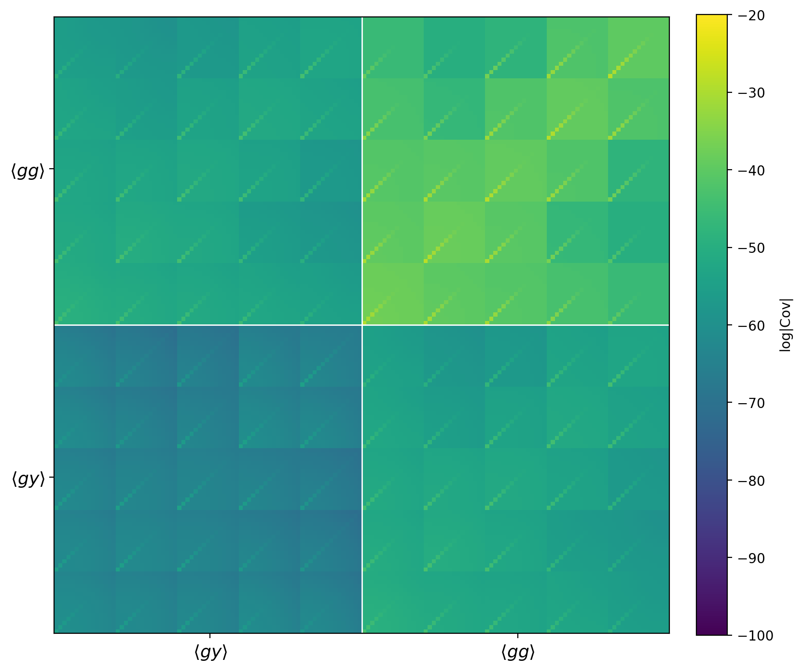
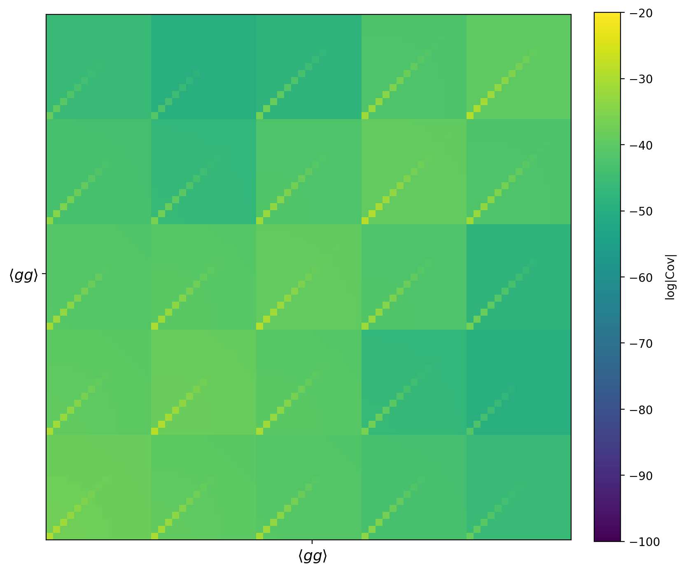
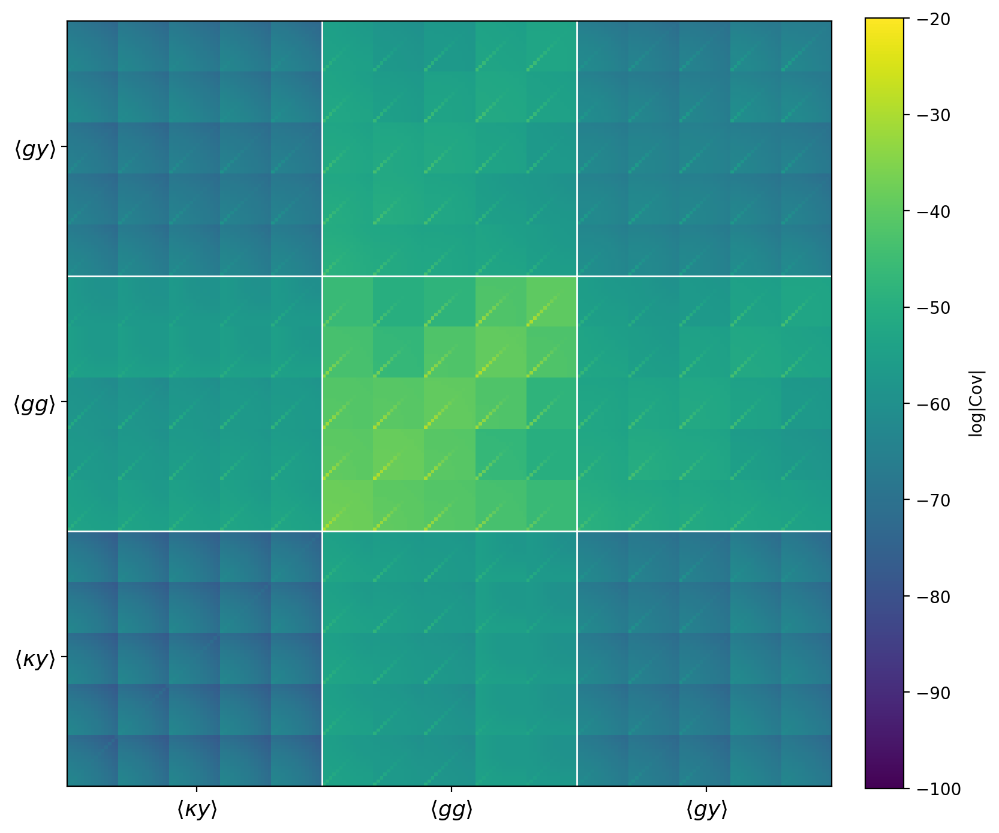
3-D power spectra and Cauchy–Schwarz consistency
Before looking at angular quantities, we test whether the halo-model 3-D spectra are internally consistent. The relevant condition is
$$ r_{xy}(k,z) \equiv \frac{P_{xy}^2(k,z)}{P_{xx}(k,z)P_{yy}(k,z)} \le 1. $$If this fails, then some inconsistency is already present before Limber projection.
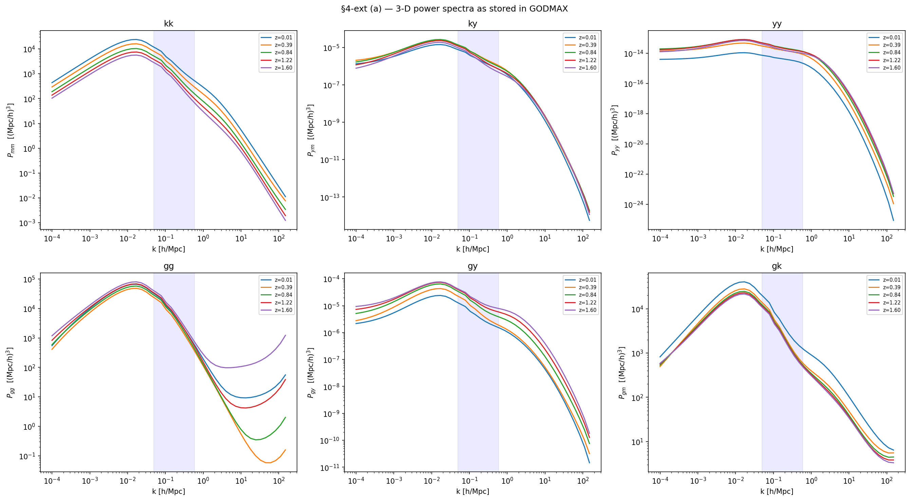
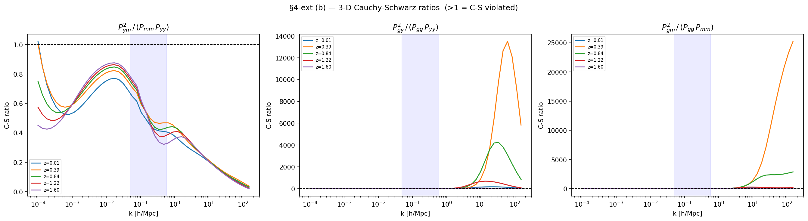
Limber integral validation
The next step is to verify that the Limber projection itself is correct. The angular spectra are recomputed independently in NumPy using the same input spectra and kernels, and are then compared against the GODMAX outputs.
$$ C_\ell^{AB} = \int \frac{W_A(\chi)W_B(\chi)}{\chi^2} P_{AB}\!\left(\frac{\ell+\tfrac12}{\chi},z(\chi)\right)\frac{d\chi}{dz}\,dz. $$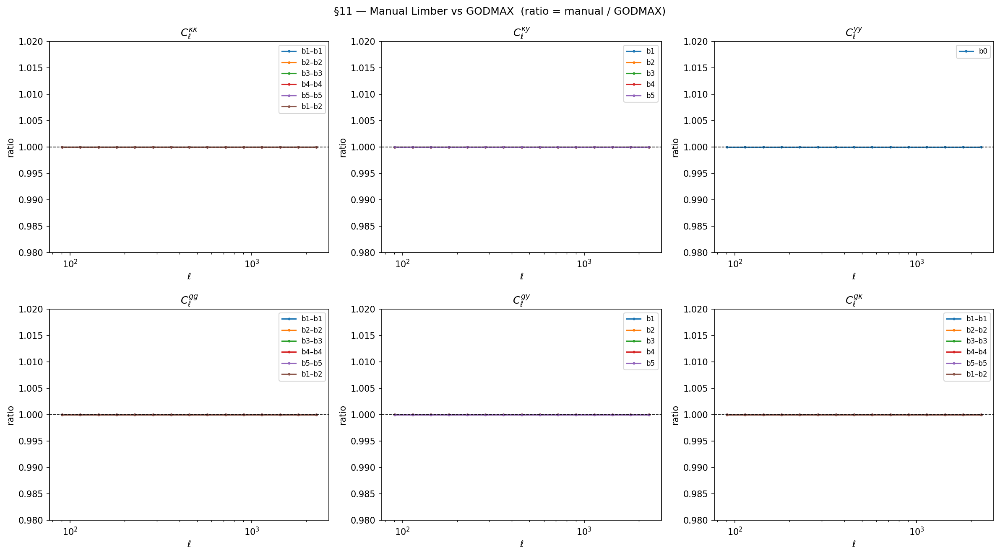
Angular Cauchy–Schwarz consistency
After projection, the same consistency can be tested directly at the level of the angular spectra:
$$ r^\ell_{xy} \equiv \frac{\left[C_\ell^{xy}\right]^2}{C_{\ell,\mathrm{tot}+N}^{xx}C_{\ell,\mathrm{tot}+N}^{yy}} \le 1. $$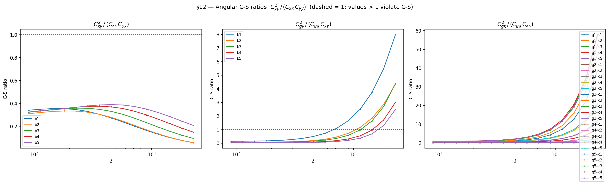
Baryonic suppression factor analysis
The suppression factor is defined as
$$ S(k,z) \equiv \frac{P_{\mathrm{halofit}}^{\mathrm{DM}}(k,z)}{P_{\mathrm{NFW,tot}}(k,z)}. $$It is best interpreted here as a halo-model accuracy correction for matter-like spectra, rather than a generic baryonic correction applicable to every field.
| Spectrum | Suppressed by $S(k,z)$? | Interpretation |
|---|---|---|
| $P_{mm}$ | Yes | Target of the matter calibration |
| $P_{gm}, P_{gg}$ | Yes | Approximate extension to biased tracers |
| $P_{ym}, P_{gy}, P_{yy}$ | No | Pressure-sector spectra are already baryonified in the BCMP/HSE chain |
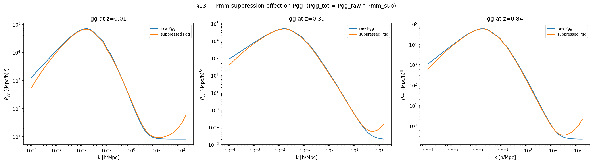
Fix A: remove $P_\mathrm{sup}$ from $P_{gg}$
Fix A removes the suppression from $P_{gg}$. This is physically attractive because $S(k,z)$ is calibrated against the matter field, not against biased HOD tracers.
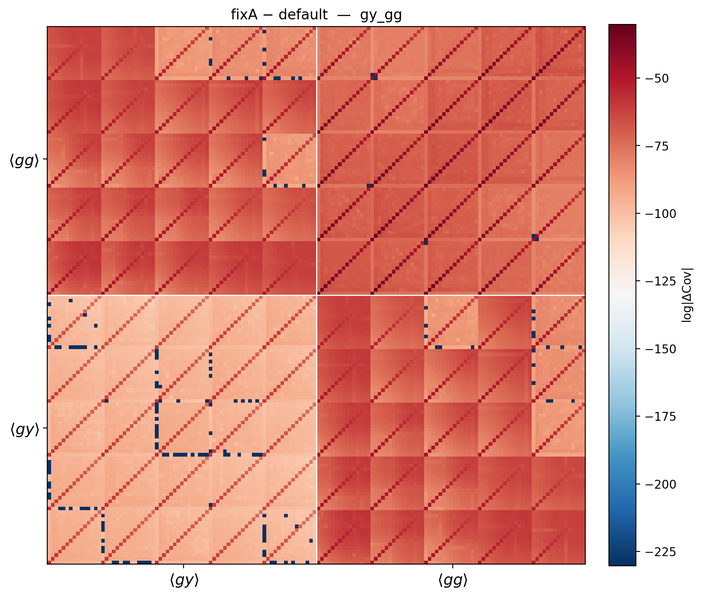
Fix B: apply $P_\mathrm{sup}$ consistently to $P_{gy}$ and $P_{yy}$
Fix B preserves the suppression in $P_{gg}$ but applies the same factor to $P_{gy}$ and $P_{yy}$, thereby enforcing the Cauchy–Schwarz relation formally.
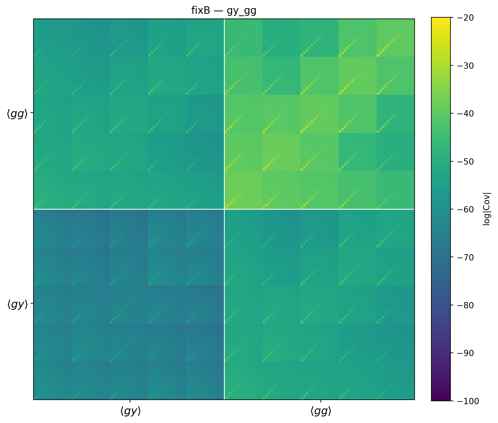
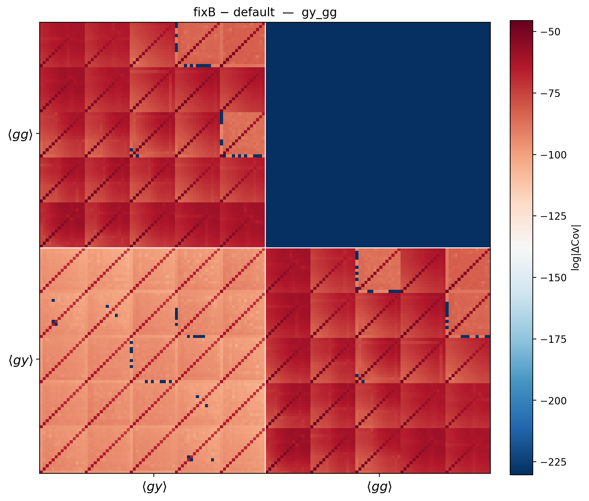
Eigenvalue diagnostics
The key numerical question is whether the negative eigenvalues are large enough to matter. They are not.
The worst mode is dominated by the gy bin_1_0 direction around $\ell \approx 718$, which is exactly where the Gaussian and non-Gaussian terms nearly cancel.
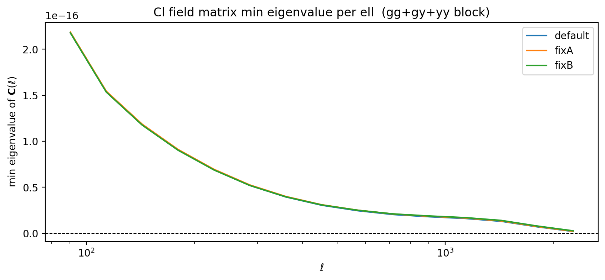
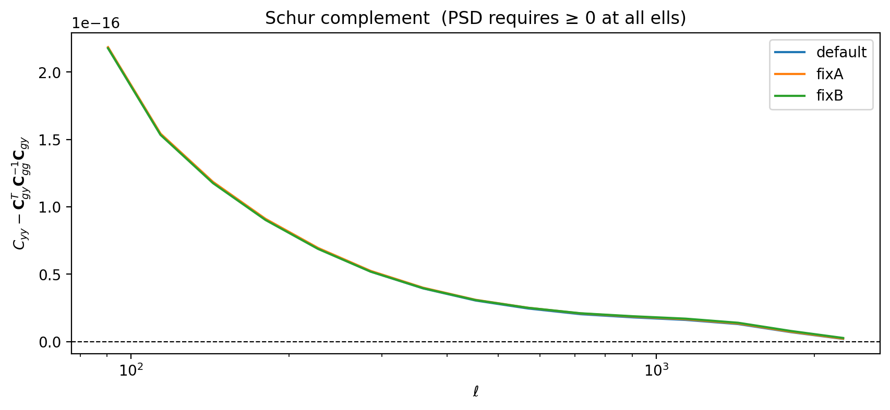
Knox formula validation
To validate the Gaussian covariance assembly directly, we reconstructed it from scratch using the Knox formula and compared it block-by-block and matrix-by-matrix against covG_dict.
Sample eigenvalue comparison for ['ky','gy']
Sample eigenvalue comparison for ['gy','gg']
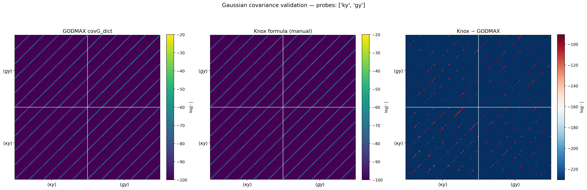
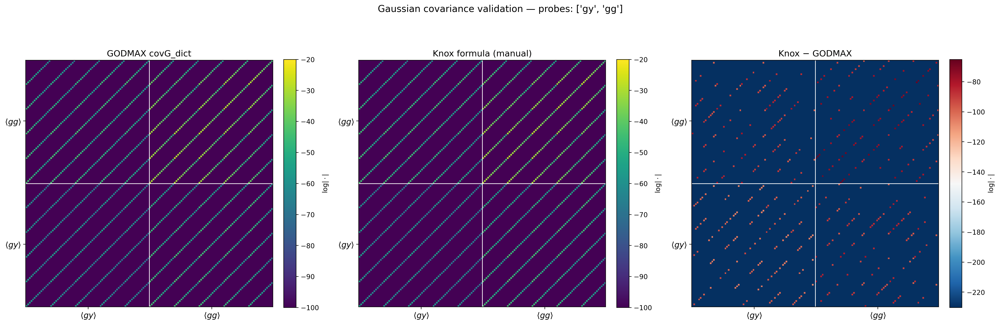
Impact of PSD clipping
Since the remaining negative eigenvalues are purely numerical, we also test whether projecting the covariance onto the PSD cone by clipping negative eigenvalues changes the matrix in any physically meaningful way. It does not.
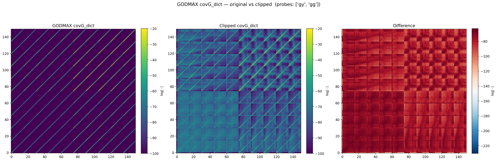
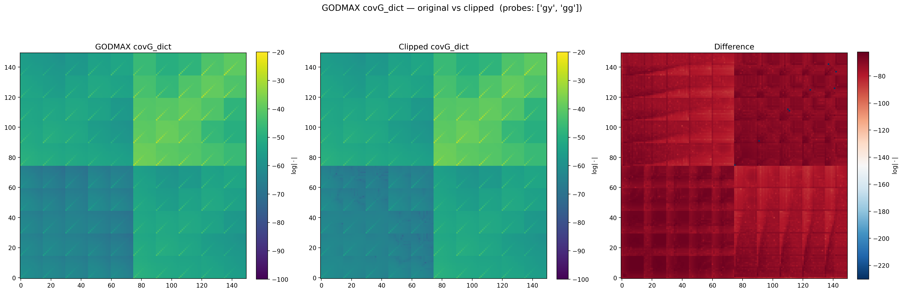
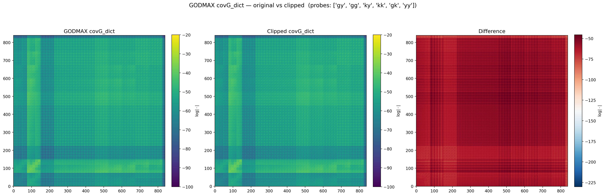
Angular power spectra overview
As a final forward-model sanity check, all angular power spectra from Cls_test are shown together.
This provides a compact view of the relative amplitudes, scale dependence, and tomographic structure across the full probe set.
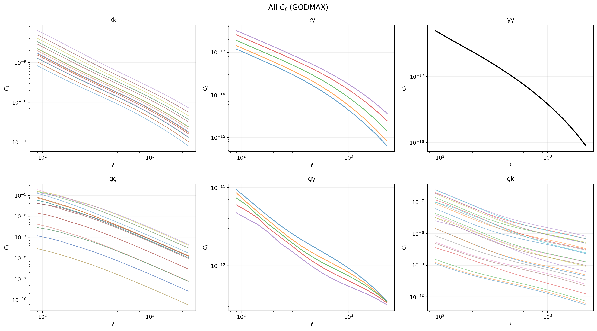
Cls_test for $kk$, $ky$, $yy$, $gg$, $gy$, and $gk$.Root cause and resolution
| Test | Result | Status |
|---|---|---|
| 3-D Cauchy–Schwarz | Violated only for $(gy,gg,yy)$ | Physical asymmetry |
| Limber validation | Exact at machine precision | Pass |
| Angular Cauchy–Schwarz | Marginal violation in $gy$ bin 1 | Weakly propagated |
| Knox validation | Independent Gaussian covariance matches GODMAX | Pass |
| Eigenvalue scale | Negative modes at $\sim 10^{-27}$ | Numerical |
| PSD clipping | No meaningful matrix change | Safe |
The only physically meaningful inconsistency identified in this study is the asymmetric application of the suppression factor: $P_{gg}$ is suppressed while $P_{gy}$ and $P_{yy}$ are not. This creates a small Cauchy–Schwarz violation in the $(gy,gg,yy)$ sector. However, this effect does not explain the negative covariance eigenvalues.
The negative eigenvalues arise from floating-point near-cancellation in a very small subspace of the full covariance and remain far below the physical scale of the matrix. The independent Knox reconstruction confirms that the Gaussian covariance is assembled correctly, and PSD clipping confirms that removing the negative modes has no practical effect on the covariance structure.
Rewritten from the original notebook-derived diagnostics page for readability and external sharing.
Figures remain unchanged and should live in the same plots/ directory as this file.